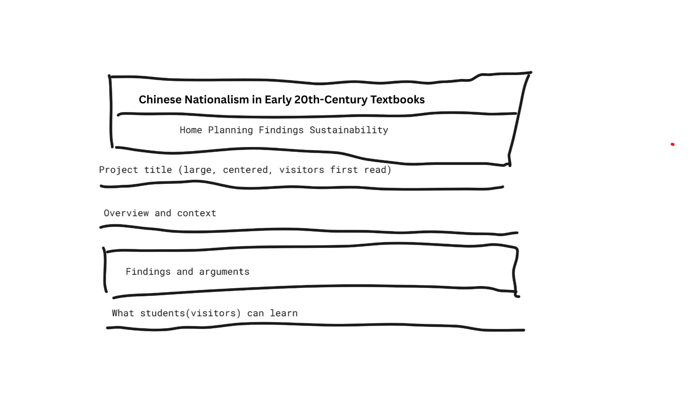
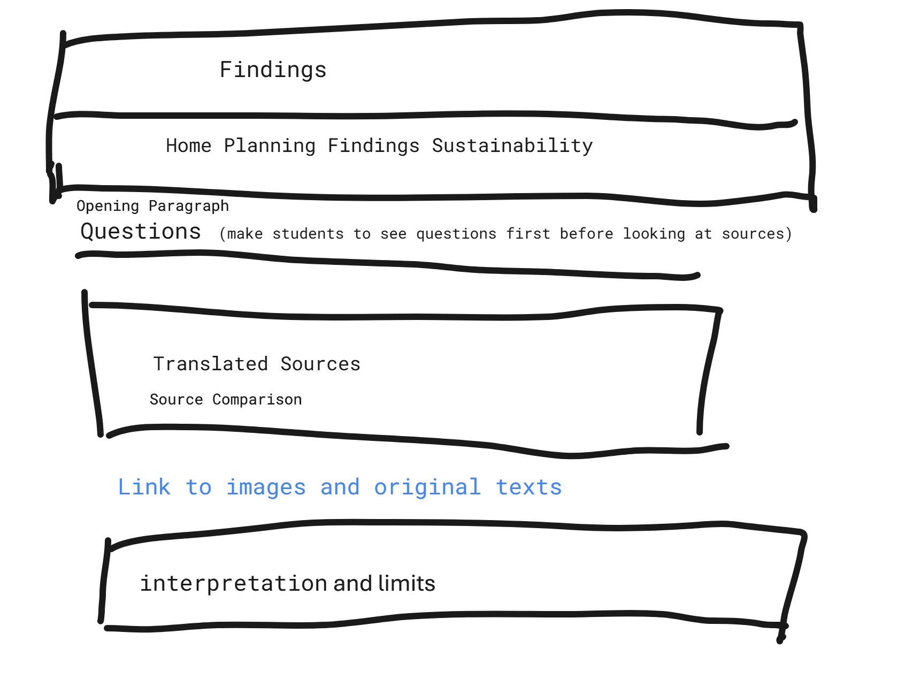
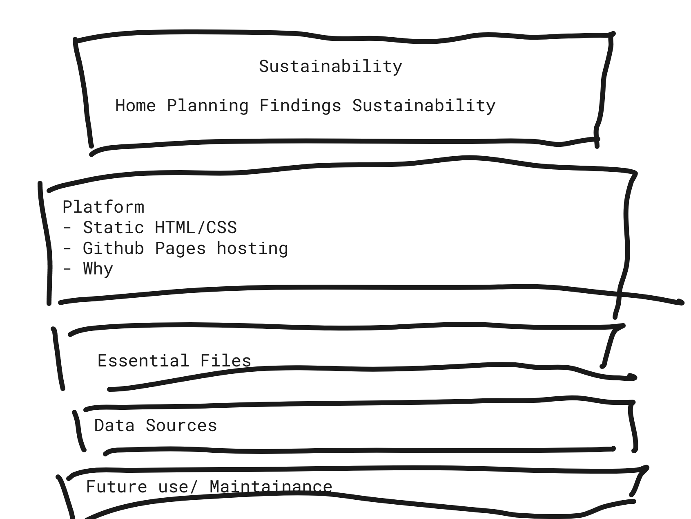

Intended Visitor
The intended visitor is an undergraduate student in an introductory course on modern
Chinese history. This reader may know the broad outline of late Qing and Republican
history, but is unlikely to have prior knowledge of textbook history, nationalism as
a constructed discourse, or the role of educational materials in shaping modern political identity.
For that reason, the site is designed to be explanatory rather than specialist. It gives
students context first, then asks them to compare short passages, and only after that
offers an interpretation.
Interface Sketches
Home Page Sketch

The home page is designed to introduce the project clearly and quickly. It presents
the topic, the historical context, and the central question before moving to findings.
The goal is to help students understand why textbooks matter as sources for studying nationalism.
Findings Page Sketch

The findings page is organized around guided comparison. Students first encounter
questions, then translated sources, and only afterward the interpretation. This structure
encourages close reading and comparison instead of asking visitors to begin with my argument.
Sustainability Page Sketch

The sustainability page is more technical. It explains how the site is built, what files
it depends on, and how a future user could update or maintain it. Unlike the other pages,
this one is aimed less at students and more at future maintainers or course reviewers.